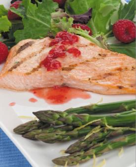
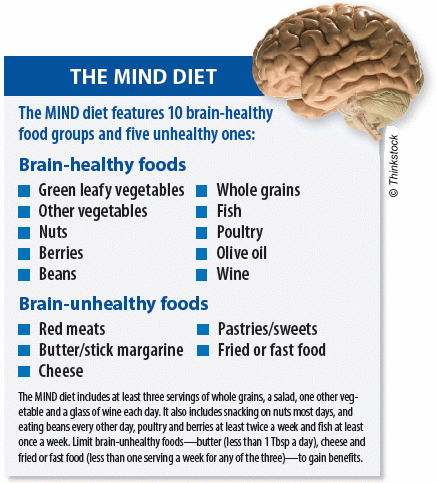
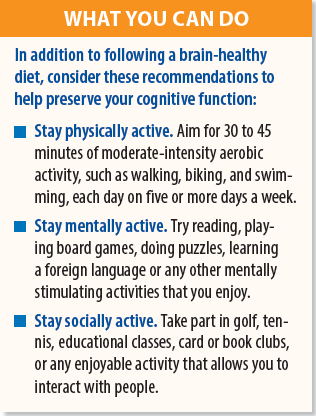
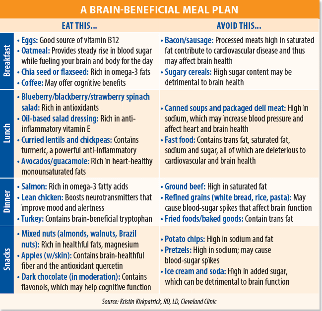

|
A Brain-Boosting Buffet You eat fruits and vegetables to help your heart. You limit salt and sugar to keep your blood pressure and blood sugar in check. Now, what are you eating to bolster your brain health? Foods that are heart-healthy also may be brain-beneficial. By filling your plate with these nutrient-rich foods and keeping it free of unhealthful fatty, sweetened or processed foods, you'll be boosting your brain power and improving your cardiovascular health, at the same time, a Cleveland Clinic expert says. “Most of the patients we see are concerned about what they should eat for their heart, blood pressure or diabetes, but for whatever reason they disconnect what's going on above the neck with the rest of the body,” says Kristin Kirkpatrick, RD, LD, Manager of Wellness Nutrition Services at Cleveland Clinic's Wellness Institute. “We know the same foods that contribute to heart disease and increase your risk for certain chronic conditions also have a detrimental effect on the brain.” IN WITH THE GOOD In a study in the March 2020 issue of Alzheimer's & Dementia, researchers compared the effects of the three diets on the risk of Alzheimer's disease (AD) among 923 people, ages 58 to 98. Compared to participants with low adherence to the diets, those who strictly followed any of these three eating plans significantly lowered their risk of AD. However, even those with only moderate adherence to the MIND diet, but not the Mediterranean or DASH diets, saw reductions in AD risk. “This is a great study,” Kirkpatrick says. “Sometimes, when some of these studies come out, they can be very overwhelming for people. It's good to know that if you can just adhere to these diets maybe 85 percent, it's still going to help.” The MIND diet specifically emphasizes green leafy vegetables and berries for brain health. In general, any plant foods that are vibrant in color—blueberries, strawberries, sweet potatoes and green leafy vegetables—are rich in important nutrients that may benefit your brain, Kirkpatrick says. She recommends eating wildcaught fish—preferably fatty fish, such as salmon, tuna and sardines—at least twice a week. These coldwater fish are rich in omega-3 fatty acids, which have positive effects on brain function and cardiovascular health. Nuts such as almonds, walnuts and Brazil nuts are another good source of healthful fats that may help with cognitive health. Studies suggest that turmeric, found in curry powder, also may give your brain a boost, largely due to its anti-inflammatory effects. Chronic inflammation contributes to cardiovascular disease and has been linked to cognitive decline and other brain ailments. Similarly, coffee and green tea are rich in inflammation-fighting antioxidants that may promote brain health. Just go easy on the sweeteners and cream, Kirkpatrick says: “What you put in your coffee or tea makes it inflammatory.” OUT WITH THE BAD Your brain relies on a steady supply of glucose for fuel, but too much of this sugar or recurrent rapid fluctuations in blood-sugar levels can promote an inflammatory response in the body that may be detrimental for cognitive health. In fact, studies have identified a link between type 2 diabetes and dementia. Instead of eating simple sugars and refined grains (such as white bread, pastries and pretzels), which can cause blood-sugar spikes, choose fiber-rich complex carbohydrates, like lentils, whole grains and some vegetables, which support cognitive function by providing a more even supply of glucose for the brain. SIMPLE CHANGES
Just be wary of portion control, Kirkpatrick says: As with any food, moderation is key, and eating too much of a good thing can still contribute to weight gain and obesity, which is bad for brain health. “You're not going to change your diet tomorrow, but you can make little tweaks that may help,” she says. “It's a great plan for your brain, but it's also a great plan for the rest of your body, too.” 
|